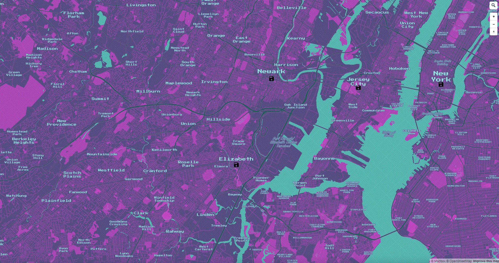

Hillshade relief
This project was used to create a shaded relief layer and edit it in the adobe illustrator. It was then used for a fictional equvalant to a "Tour de France" map. I chose to make one based on the American Revolution going through all the original 13 colonies. For each stopping location I used a history book battle symbol custom made in photoshop.
Close ProjectWeb Map Tileset
Link to Tile Set: https://api.mapbox.com/styles/SanJuniperoThis project was to design a new tileset based on a movie or TV series so I choose OutRun style similar to San Junipero from Black Mirror, Ready Player One, and Blade Runnner 2049. To start we made an Insperation Board to get the style planned before implementing.
Next we had to scale each of the elements given in Mapbox and add all of the colors and textures outlined in the Insporation Board. Then Along the way the idea around San Junipero became the dominant insperation Using a computer mother board style texture and Floppy Disk for citties as "Save" points.
 Close ProjectThis is a challenge to create a new map with different designs and or themes for 30 days
Day 1 Points:
 Close Project
Close Project